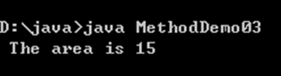
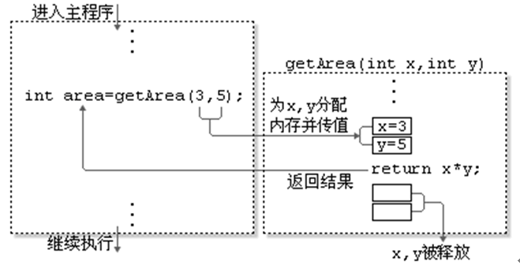
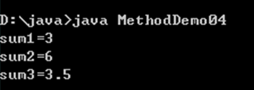
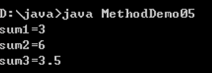
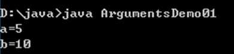
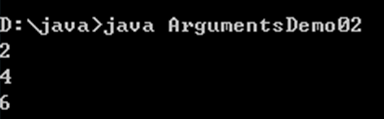
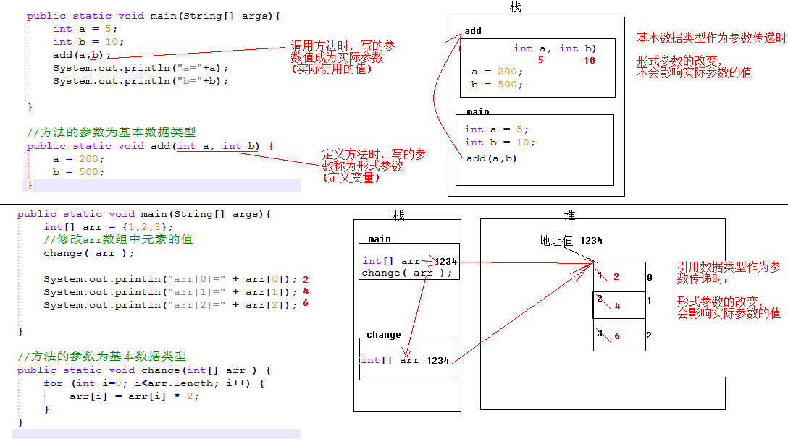

在我们的日常生活中，方法可以理解为要做某件事情，而采取的解决办法。
如：小明同学在路边准备坐车来学校学习。这就面临着一件事情（坐车到学校这件事情）需要解决，解决办法呢？可采用坐公交车或坐出租车的方式来学校，那么，这种解决某件事情的办法，我们就称为方法。
在java中，方法就是用来完成解决某件事情或实现某个功能的办法。
方法实现的过程中，会包含很多条语句用于完成某些有意义的功能——通常是处理文本，控制输入或计算数值。
我们可以通过在程序代码中引用方法名称和所需的参数，实现在该程序中执行（或称调用）该方法。方法，一般都有一个返回值，用来作为事情的处理结果。
在Java中，声明一个方法的具体语法格式如下：
修饰符 返回值类型 方法名(参数类型 参数名1,参数类型 参数名2,．．．．．．){
执行语句
………
return 返回值;
}对于上面的语法格式中具体说明如下：
修饰符：方法的修饰符比较多，有对访问权限进行限定的，有静态修饰符static，还有最终修饰符final等，这些修饰符在后面的学习过程中会逐步介绍
返回值类型：用于限定方法返回值的数据类型
参数类型：用于限定调用方法时传入参数的数据类型
参数名：是一个变量，用于接收调用方法时传入的数据
return关键字：用于结束方法以及返回方法指定类型的值
返回值：被return语句返回的值，该值会返回给调用者
需要特别注意的是，方法中的“参数类型 参数名1，参数类型 参数名2”被称作参数列表，它用于描述方法在被调用时需要接收的参数，如果方法不需要接收任何参数，则参数列表为空，即()内不写任何内容。方法的返回值必须为方法声明的返回值类型，如果方法中没有返回值，返回值类型要声明为void，此时，方法中return语句可以省略。
接下来通过一个案例来演示方法的定义与使用，如下图所示。MethodDemo01.java
public class MethodDemo01 {
public static void main(String[] args) {
int area = getArea(3, 5); // 调用 getArea方法
System.out.println(" The area is " + area);
}
// 下面定义了一个求矩形面积的方法，接收两个参数，其中x为高，y为宽
public static int getArea(int x, int y) {
int temp = x * y; // 使用变量temp记住运算结果
return temp; // 将变量temp的值返回
}
}运行结果如下图所示。

在上述代码中，定义了一个getArea()方法用于求矩形的面积，参数x和y分别用于接收调用方法时传入的高和宽，return语句用于返回计算所得的面积。在main()方法中通过调用getArea()方法，获得矩形的面积，并将结果打印。
接下来通过一个图例演示getArea()方法的整个调用过程，如下图所示。

从上图中可以看出，在程序运行期间，参数x和y相当于在内存中定义的两个变量。当调用getArea()方法时，传入的参数3和5分别赋值给变量x和y，并将x*y的结果通过return语句返回，整个方法的调用过程结束，变量x和y被释放。
分别定义如下方法：
定义无返回值无参数方法，如打印3行，每行3个*号的矩形
定义有返回值无参数方法，如键盘录入得到一个整数
定义无返回值有参数方法，如打印指定M行，每行N个*号的矩形
定义有返回值有参数方法，如求三个数的平均值
无返回值无参数方法，如打印3行，每行3个*号的矩形：
public static void printRect(){
//打印3行星
for (int i=0; i<3; i++) {
//System.out.println("***"); 相当于是打印3颗星，换行
//每行打印3颗星
for (int j=0; j<3; j++) {
System.out.print("*"); // ***
}
System.out.println();
}
}有返回值无参数方法，如键盘录入得到一个整数：
public static int getNumber(){
Scanner sc = new Scanner(System.in);
int number = sc.nextInt();
return number;
}无返回值有参数方法，如打印指定M行，每行N个*号的矩形
public static void printRect2(int m, int n){
//打印M行星
for (int i=0; i<m; i++) {
//每行中打印N颗星
for (int j=0; j<n; j++) {
System.out.print("*");
}
System.out.println();
}
}有返回值有参数方法，如求三个数的平均值
public static double getAvg(double a, double b, double c) {
double result = (a+b+c)/3;
return result;
}我们假设要在程序中实现一个对数字求和的方法，由于参与求和数字的个数和类型都不确定，因此要针对不同的情况去设计不同的方法。接下来通过一个案例来实现对两个整数相加、对三个整数相加以及对两个小数相加的功能，具体实现如下所示。MethodDemo02.java
public class MethodDemo02 {
public static void main(String[] args) {
// 下面是针对求和方法的调用
int sum1 = add01(1, 2);
int sum2 = add02(1, 2, 3);
double sum3 = add03(1.2, 2.3);
// 下面的代码是打印求和的结果
System.out.println("sum1=" + sum1);
System.out.println("sum2=" + sum2);
System.out.println("sum3=" + sum3);
}
// 下面的方法实现了两个整数相加
public static int add01(int x, int y) {
return x + y;
}
// 下面的方法实现了三个整数相加
public static int add02(int x, int y, int z) {
return x + y + z;
}
// 下面的方法实现了两个小数相加
public static double add03(double x, double y) {
return x + y;
}
}运行结果如下图所示。

从上述代码不难看出，程序需要针对每一种求和的情况都定义一个方法，如果每个方法的名称都不相同，在调用时就很难分清哪种情况该调用哪个方法。
为了解决这个问题，Java允许在一个类中定义多个名称相同的方法，但是参数的类型或个数必须不同，这就是方法的重载。
下面的三个方法互为重载关系
public static int add(int x,int y) {逻辑} //两个整数加法
public static int add(int x,int y,int z) {逻辑} //三个整数加法
public static int add(double x,double y) {逻辑} //两个小数加法接下来通过方法重载的方式进行修改，如下所示。MethodDemo03.java
public class MethodDemo03 {
public static void main(String[] args) {
// 下面是针对求和方法的调用
int sum1 = add(1, 2);
int sum2 = add(1, 2, 3);
double sum3 = add(1.2, 2.3);
// 下面的代码是打印求和的结果
System.out.println("sum1=" + sum1);
System.out.println("sum2=" + sum2);
System.out.println("sum3=" + sum3);
}
// 下面的方法实现了两个整数相加
public static int add(int x, int y) {
return x + y;
}
// 下面的方法实现了三个整数相加
public static int add(int x, int y, int z) {
return x + y + z;
}
// 下面的方法实现了两个小数相加
public static double add(double x, double y) {
return x + y;
}
}MethodDemo02.java的运行结果和MethodDemo03.java一样，如下图所示。

上述代码中定义了三个同名的add()方法，它们的参数个数或类型不同，从而形成了方法的重载。
在main()方法中调用add()方法时，通过传入不同的参数便可以确定调用哪个重载的方法，如add(1,2)调用的是两个整数求和的方法。值得注意的是，方法的重载与返回值类型无关，它只有两个条件，一是方法名相同，二是参数个数或参数类型不相同。
重载方法参数必须不同：
参数个数不同，如method(int x)与method(int x,int y)不同
参数类型不同，如method(int x)与method(double x)不同g
参数顺序不同，如method(int x,double y)与method(double x,int y)不同
l重载只与方法名与参数类型相关与返回值无关：
如void method(int x)与int method(int y)不是方法重载，不能同时存在
重载与具体的变量标识符无关：
如method(int x)与method(int y)不是方法重载，不能同时存在
参数传递，可以理解当我们要调用一个方法时，我们会把指定的数值，传递给方法中的参数，这样方法中的参数就拥有了这个指定的值，可以使用该值，在方法中运算了。这种传递方式，我们称为参数传递。
在这里，定义方法时，参数列表中的变量，我们称为形式参数
调用方法时，传入给方法的数值，我们称为实际参数
我们看下面的两段代码，来明确下参数传递的过程：
public class ArgumentsDemo01 {
public static void main(String[] args) {
int a=5;
int b=10;
change(a, b);//调用方法时，传入的数值称为实际参数
System.out.println("a=" + a);
System.out.println("b=" + b);
}
public static void change(int a, int b){//方法中指定的多个参数称为形式参数
a=200;
b=500;
}
}程序的运行结果如下：

再看另一段代码
public class ArgumentsDemo02 {
public static void main(String[] args) {
int[] arr = { 1, 2, 3 };
change(arr);// 调用方法时，传入的数值称为实际参数
for (int i = 0; i < arr.length; i++) {
System.out.println(arr[i]);
}
}
public static void change(int[] arr) {// 方法中指定的多个参数称为形式参数
for (int i = 0; i < arr.length; i++) {
arr[i] *= 2;
}
}
} 程序的运行结果如下：


通过上面的两段程序可以得出如下结论：
当调用方法时，如果传入的数值为基本数据类型（包含String类型），形式参数的改变对实际参数不影响
当调用方法时，如果传入的数值为引用数据类型（String类型除外），形式参数的改变对实际参数有影响